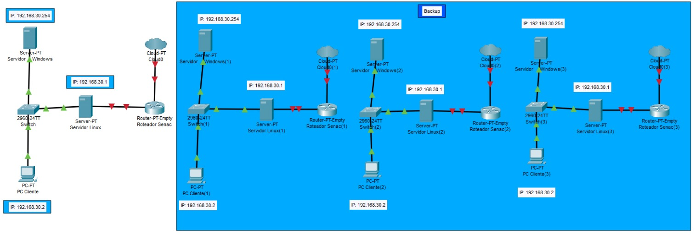

No segundo ano de TI tivemos que criar em grupo toda uma aquitetura de rede para a praça de alimentação 1 do Senac. Desenvolvemos para este trabalho etapas como: criação dos servidores e clientes, calculo de sub rede, backup, escolha de hardware, orçamento, topologia e metragem de cabeamento.
Nem tenho que dizer que foi bem complexo e demandou muito tempo e organização, mas ao mesmo tempo foi o trabalho que mais gostei de fazer, pude trabalhar com muitas coisas que aprendemos durante o ano e tive o prazer de trabalhar com uma ótima equipe muito bem organizada e empenhada com o projeto.
No terceiro ano juntando a programação com banco de dados, desenvolvemos em grupo um app para um petshop, com funções permitindo agendar consultas, cadastrar e adotar animais, cadastrar produtos no estoque e administrar funcionários.
Foi muito divertido produzir este app, não é atoa que me fez descobrir que gosto de banco de dados, logo trabalhar com isso foi uma experiência muito boa. Porém o tempo não estava ao nosso favor, então a questão de tempo para desenvolvimento foi bem curto e nos fez trabalhar bastante para conseguirmos entregar o projeto.